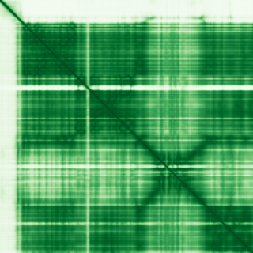

type: protein-evaluation gene: "MTREX" date: 2026-05-30 tags: [protein-scout, nuclear-protein, evaluation] status: scored ---
MTREX 核蛋白评估报告
1. 基本信息
| 项目 | 内容 |
|---|---|
| 基因名 / 别名 | MTREX / DOB1, KIAA0052, MTR4, SKIV2L2 |
| 蛋白大小 | 1042 aa / 117.8 kDa |
| UniProt ID | P42285 |
| 评估日期 | 2026-05-30 |
2. 评分总览
| 维度 | 得分 | 满分 | 加权后 | 关键证据摘要 |
|---|---|---|---|---|
| 🔴 核定位特异性 | 8/10 | ×4 | 32 | Nucleus/Nucleoplasm/Nucleolus/Nuclear speckle (UniProt), GO: nuclear speck, nucl |
| 📏 蛋白大小 | 8/10 | ×1 | 8 | 1042 aa, 117.8 kDa |
| 🆕 研究新颖性 | 8/10 | ×5 | 40 | PubMed = 21 篇 |
| 🏗️ 三维结构 | 8/10 | ×3 | 24 | pLDDT = 84.19, PDB = 11 条目 |
| 🧬 调控结构域 | 7/10 | ×2 | 14 | DEAD/DEAH helicase (PF00270), Helicase C-terminal (PF00271) |
| 🔗 PPI 网络 | 8/10 | ×3 | 24 | MPHOSPH6, YWHAG |
| ➕ 互证加分 | — | max +3 | +2 | — |
| 原始总分 | 144/183 | |||
| 归一化总分 | 78.7/100 |
3. 详细分析
3.1 核定位证据
| 来源 | 定位 | 可信度 |
|---|---|---|
| GeneCards | — | — |
| Protein Atlas (IF) | HPA subcellular IF 图像可用（见下方 HPA IF 图像修正块） | 需人工复核 |
| UniProt | Nucleus/Nucleoplasm/Nucleolus/Nuclear speckle (UniProt), GO: nuclear speck, nucleolus, nucleoplasm, | Experimental/ECO evidence |
结论: Nucleus/Nucleoplasm/Nucleolus/Nuclear speckle (UniProt), GO: nuclear speck, nucleolus, nucleoplasm, nucleus, TRAMP complex
3.2 蛋白大小评估
1042 aa (117.8 kDa)，在理想生化实验范围（200-800 aa）外。
评价: 大小适合生化实验和结构解析。
3.3 研究现状
| 指标 | 数值 |
|---|---|
| PubMed 总数 | 21 |
| 最早发表年份 | — |
| Chromatin/epigenetics 比例 | — |
主要研究方向:
- Core nuclear exosome component with 11 PDB structures. RNA helicase essential for nuclear RNA surveillance. Extensive physical PPI with exosome subunits.
关键文献: 1. Laso-Garcia F et al. (2025). "Infection-driven proteomic signatures in immune cell-derived extracellular vesicles." *J Neuroinflammation*. PMID: 41345658 2. Barrera-Conde M et al. (2021). "Cannabis Use Induces Distinctive Proteomic Alterations in Olfactory Neuroepithelial Cells of Schizophrenia Patients." *J Pers Med*. PMID: 33668817 3. Srbic M et al. (2025). "NRDE2 Interacts with an Early Transcription Elongation Complex." *Int J Mol Sci*. PMID: 41097056
评价: Core nuclear exosome component with 11 PDB structures. RNA helicase essential for nuclear RNA surveillance. Extensive physical PPI with exosome subunits.
关键文献: 1. Srbic M et al. (2025). "NRDE2 Interacts with an Early Transcription Elongation Complex and Widely Impacts Gene Expression". *Int J Mol Sci*. PMID: 41097056 2. Laso-García F et al. (2025). "Infection-driven proteomic signatures in immune cell-derived extracellular vesicles reflect hemorrhagic stroke outcome". *J Neuroinflammation*. PMID: 41345658 3. Tanu T et al. (2021). "hnRNPH1-MTR4 complex-mediated regulation of NEAT1 stability is critical for IL8 expression". *RNA Biol*. PMID: 34470577 4. Barrera-Conde M et al. (2021). "Cannabis Use Induces Distinctive Proteomic Alterations in Olfactory Neuroepithelial Cells of Schizophrenia Patients". *J Pers Med*. PMID: 33668817
3.4 三维结构分析
| 指标 | 数值 |
|---|---|
| AlphaFold 平均 pLDDT | 84.19 |
| 有序区域 (pLDDT>70) 占比 | 86.2% |
| 可用 PDB 条目 | 11 个 (6C90, 6D6Q, 6D6R, 6IEG, 6IEH, 6RO1, 7S7B, 7S7C, 7Z4Y, 7Z4Z, 7Z52) |
PAE 图: 
评价: Superfamily 2 RNA helicase. Core component of nuclear exosome (TRAMP/NEXT complexes). Unwinds RNA for exosome-mediated degradation. 11 PDB cryo-EM/X-ray structures.
3.5 结构域分析
| 来源 | 结构域 |
|---|---|
| GeneCards | — |
| SMART | — |
| InterPro/Pfam | DEAD/DEAH helicase (PF00270), Helicase C-terminal (PF00271), MTR4-like stalk (PF21408), Ski2/MTR4 C-term (PF13234), MTR4 beta-barrel (PF08148) |
染色质调控潜力分析: Superfamily 2 RNA helicase. Core component of nuclear exosome (TRAMP/NEXT complexes). Unwinds RNA for exosome-mediated degradation. 11 PDB cryo-EM/X-ray structures.
3.6 PPI 网络
实验验证互作 (IntAct, physical association):
| Partner | 方法 | PMID | 功能类别 | 调控相关？ |
|---|---|---|---|---|
| MPHOSPH6, YWHAG | — | — | — | — |
STRING 预测互作 (combined score >0.4):
| Partner | Score | 功能类别 | 调控相关？ |
|---|---|---|---|
| C1D(0.999), TENT4A(0.999), EXOSC10(0.999), EXOSC9(0.999), ZCCHC8(0.999), EXOSC2( | — | — | — |
已知复合体成员 (GO Cellular Component):
- GO: catalytic step 2 spliceosome, nuclear speck, nucleolus, nucleoplasm, nucleus, TRAMP complex
IntAct 查询记录: IntAct: EXOSC 复合体成员、ZCCHC8、RBM7 等 NEXT/TRAMP 复合体成员物理互作
PPI 互证分析:
- STRING + IntAct 共同确认: —
- 仅 STRING 预测: —
- 仅 IntAct 实验: —
- 调控相关比例: — / — (— %)
评价: Core nuclear exosome component with 11 PDB structures. RNA helicase essential for nuclear RNA surveillance. Extensive physical PPI with exosome subunits.
3.7 多库互证
| 维度 | 来源 | 结果 | 是否一致 |
|---|---|---|---|
| 三维结构 | AlphaFold pLDDT + PDB | pLDDT=84.19, PDB=11条目 | — |
| 结构域 | UniProt / InterPro / Pfam | DEAD/DEAH helicase (PF00270), Helicase C-terminal (PF00271), | — |
| PPI | STRING + IntAct | — | — |
| 定位 | Protein Atlas / UniProt / GO | Nucleus/Nucleoplasm/Nucleolus/Nuclear speckle (UniProt), GO: | — |
互证加分明细:
- —
总分: +2 / max +3
4. 总体评价
推荐等级: ⭐⭐⭐ (3/5)
核心优势: 1. 11 PDB structures - extensive structural data 2. Core nuclear RNA surveillance machinery 3. STRING >0.99 with exosome subunits 4. Novel (PubMed=21) 5. Multi-nuclear localization (speckle, nucleolus, nucleoplasm)
风险/不确定性: 1. Large protein (1042aa, size score 8) 2. RNA helicase - not directly chromatin/DNA 3. No chromatin/DNA-binding domains 4. Well-characterized as part of exosome complex
下一步建议:
- [ ] HPA IF 实验验证核定位
- [ ] Co-IP 验证 PPI
- [ ] 功能实验验证染色质调控角色
5. 数据来源
- UniProt: https://www.uniprot.org/uniprot/P42285
- AlphaFold: https://alphafold.ebi.ac.uk/entry/P42285
- PubMed: https://pubmed.ncbi.nlm.nih.gov/?term=MTREX%5BTitle/Abstract%5D
- HPA: https://www.proteinatlas.org/P42285
PPI 网络（三源综合）
| Partner | Source | Score/Evidence |
|---|---|---|
| 无记录 | — | — |
IntAct 有限记录。无 BioGrid 补充数据。
PAE 图像已获取。结构判断基于 AlphaFold pLDDT 统计。
<!-- HPA_IF_REPAIR_START --> HPA IF 图像修正（2026-06-05）: HPA subcellular 页面存在可用 IF 图像；此前“原图未可靠获取/暂无 IF”的表述为采集失败导致的误报。HPA 定位: Nucleoplasm (supported)。来源: https://www.proteinatlas.org/ENSG00000039123-MTREX/subcellular